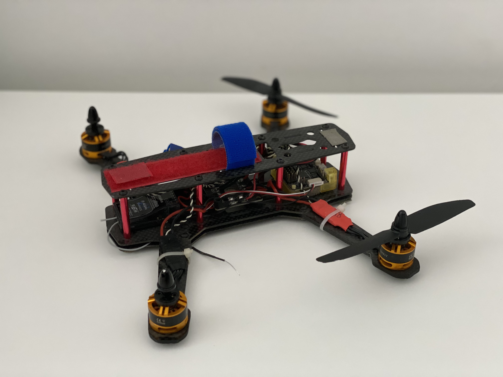
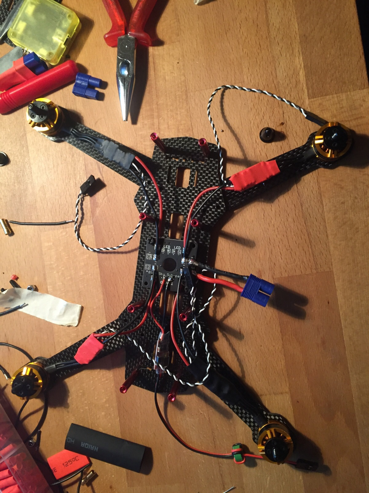

One of my interests is flying first-person-view drones and drone mapping of terrain and buildings for 3d reconstruction. The mapping is based on photogrammetry and not lidar. I am used to working on big point clouds an meshes. My racing drones are built by myself, although for mapping purposes commercial drones are used.
 